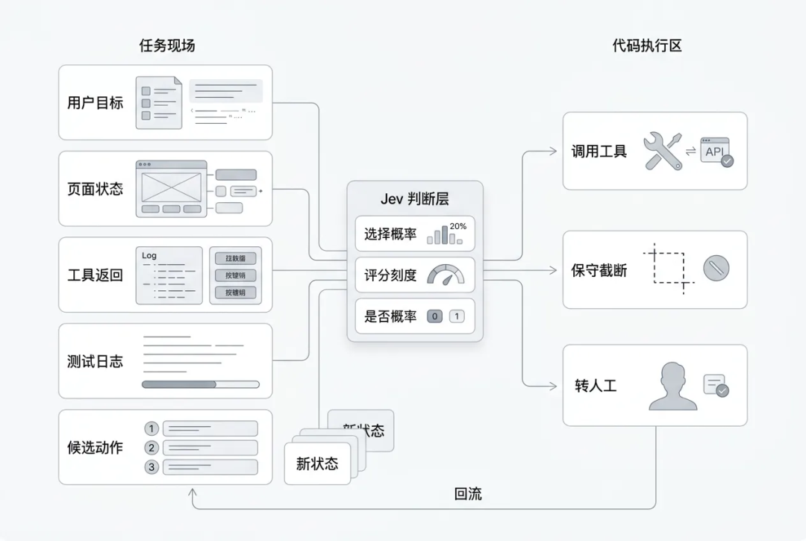
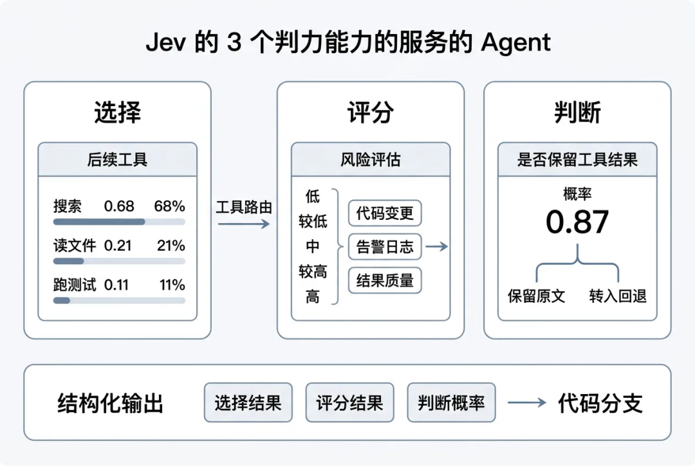
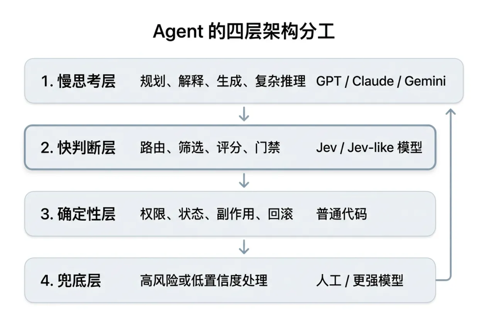
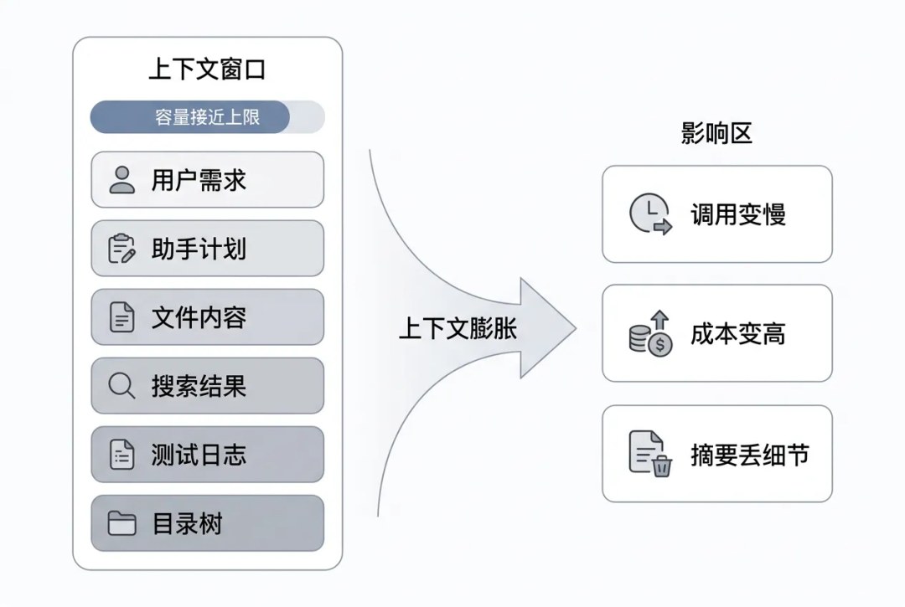
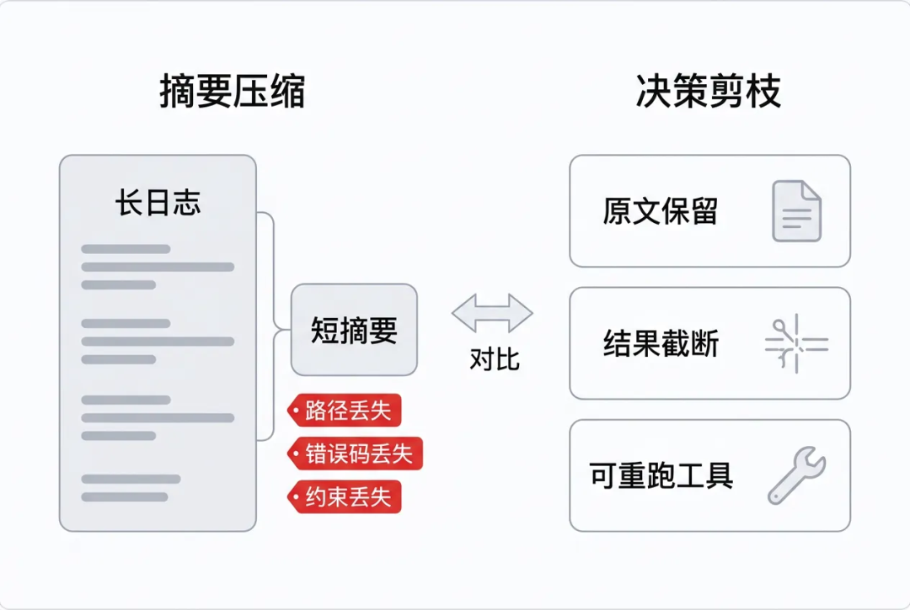
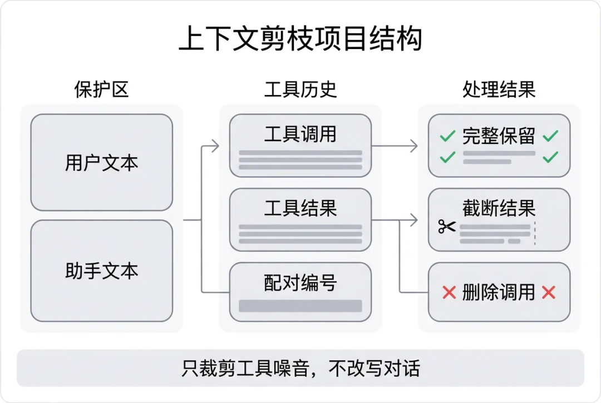
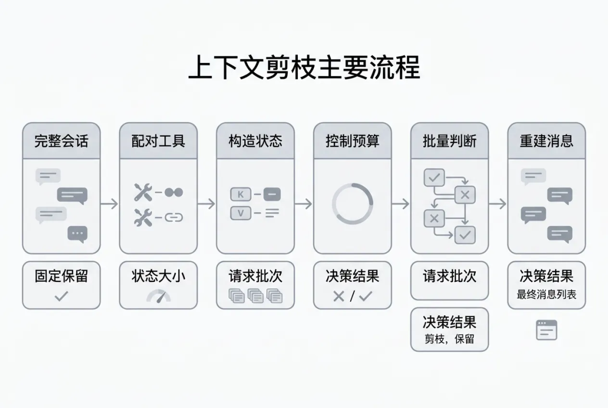
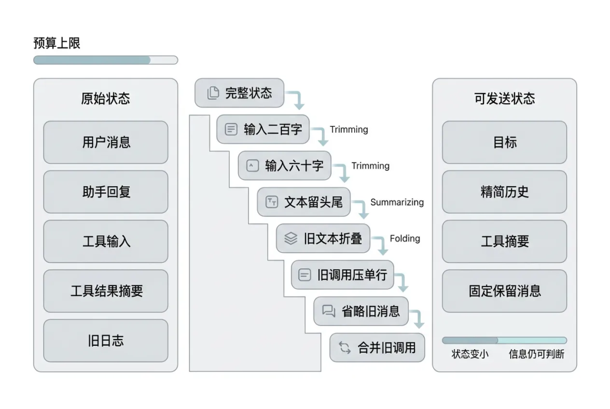
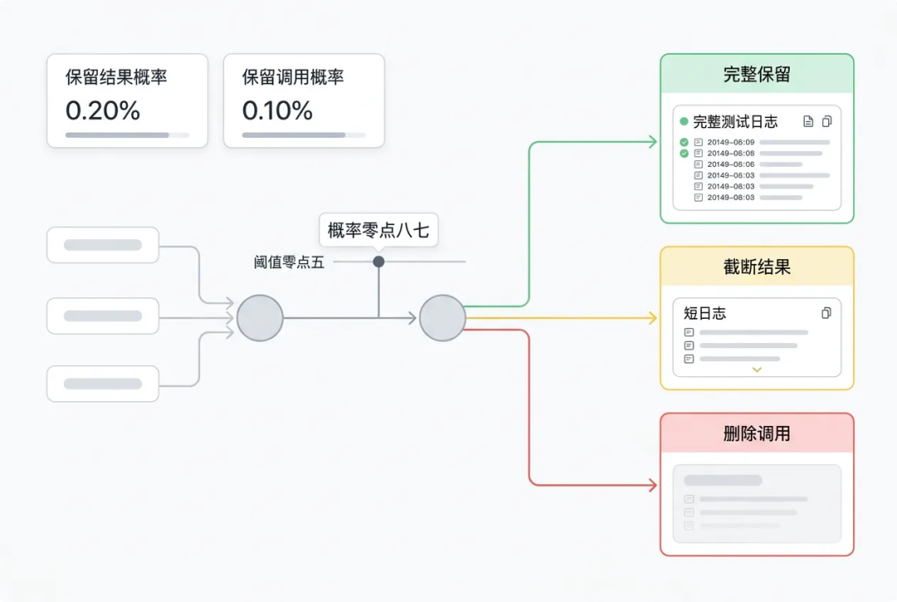
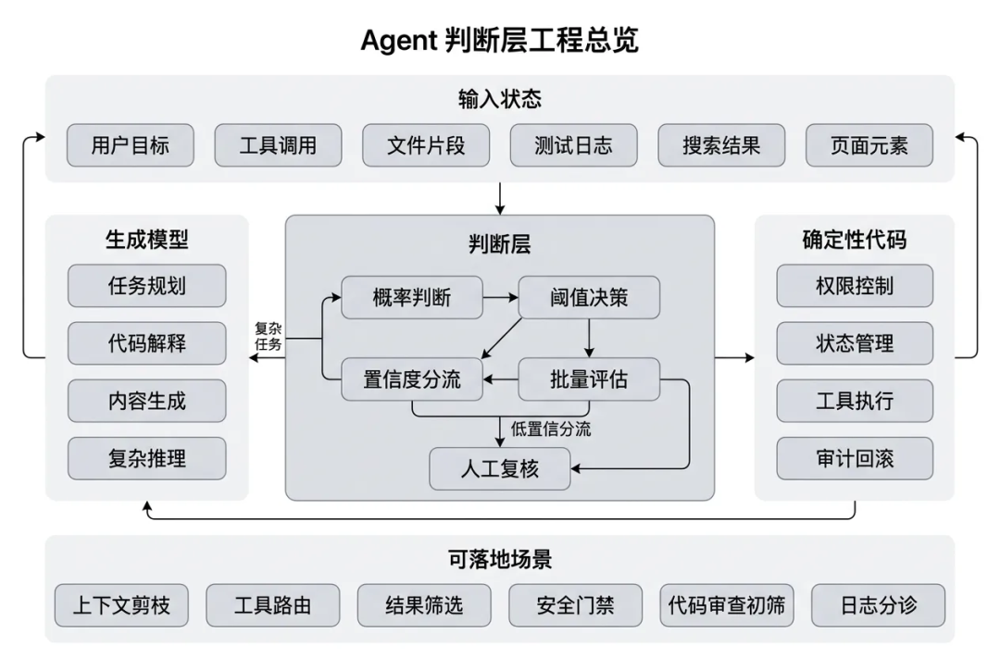

一万字Jev 工程实践长文：把 Agent 的“判断题”从大模型里拆出来
来源：微信公众号 归档日期：2026-09-21 抓取状态：成功 原文字符：16964｜配图：12 张
摘要速览
- Jev 工程实践长文：Agent 里很多模型调用不是为了生成答案，而是为了替代码做一次判断；文章讲如何把这类“判断题”从大模型调用中拆出来，改为结构化决策。
核心内容
- 原文已完整抓取，按章节分层；细节以「原文沉淀」为准。
- 配图 12 张已本地化到
_assets/20260921-一万字Jev工程实践长文把Agent的判断题从大模型里拆出来/。
可执行启发
- 按原文目录定位相关章节精读。
- 引用数据/步骤时打开对应小节，避免只看摘要。
我的想法
（待补充）
原文沉淀
目录
- 一、Jev 是什么：把生成问题改成判断问题
- 二、为什么 Agent 需要一个快判断层
- 第一层：生成成本和判断需求不匹配
- 第二层：摘要会破坏可复核性
- 第三层：置信度没有进入代码分支
- 三、fast-jev-compaction：不做摘要，只做保留决策
- 四、Demo 实现拆解：从历史消息到压缩决策
- 4.1 工具调用配对：先把 tool_use 和 tool_result 绑定
- 4.2 state 构造：只给 Jev 判断所需信息
- 4.3 fitState：预算不够时逐级降级
- 4.4 两个 Noul：拆出三种压缩动作
- 这个工具调用本身是否还重要？
- 这个工具结果全文是否还需要保留？
- 4.5 分批请求与失败回退
- 五、Demo 跑出来了什么
- 六、怎么选型：Jev、Structured Output 和传统分类器
- 七、从项目 Demo 到工程模式
- 八、结语

作者：daryl，高级前端开发
丨 导语 从 TypeSafe AI 的 System One Model，到
fast-jev-compaction的上下文剪枝，再到一个可运行的本地尝试
最近 Jev 很火。它的传播路径很典型：先是 TypeSafe AI 发布一个听起来有点反常识的新模型，再是 Hacker News、知乎、Reddit 开始争论，接着 GitHub 上很快出现一批 Demo。有人拿它玩 Doom，有人拿它跑 Mario，也有人拿它接进浏览器自动化、代码审查、Agent 路由和上下文压缩里。
我一开始对它也有点怀疑。一个“不生成文本”的模型，能有多大空间？现在 GPT、Claude 已经能做 structured output，也能走 tool calling，为什么还要单独搞一个 Jev？
把几篇资料看完，再读 fast-jev-compaction，最后自己仿写了一个小 Demo 之后，我觉得它最值得聊的不是“模型本身有多神”，而是一个更具体的工程问题：
Agent 里很多模型调用不是为了生成答案，而是为了替代码做一次判断。
这句话如果成立，Jev 就不是“更便宜的 GPT”。它更像 Agent 系统里缺了很久的一个零件：快判断层。

一、Jev 是什么：把生成问题改成判断问题
Jev 是 TypeSafe AI 发布的 System One Model。它和我们熟悉的聊天模型不太一样：聊天模型擅长生成文本，Jev 则刻意放弃文本生成，只返回类型化的概率决策。
换句话说，它不是让模型“说一段话”，而是让模型回答一个程序能直接使用的问题：选哪个、打几分、是不是。
它的输入可以比较杂：用户目标、页面状态、工具结果摘要、业务字段、候选动作。它的输出必须很窄：选择哪个、打几分、某个命题成立的概率是多少。

它主要有三种原语：
| 原语 | 中文理解 | 输出形态 | 适合场景 |
|---|---|---|---|
| Choice | 单选题 | 选项 + 每个选项概率 + confidence | 工具路由、动作选择、分类 |
| Score | 打分题 | 连续分数 + 概率分布 + confidence | 风险评分、质量评分、相关性评分 |
| Noul | 判断题 | 0 ~ 1 的概率 | 是否保留、是否危险、是否达成目标 |
举个最贴近开发的例子。
如果现在上下文里有一段测试日志，系统只想知道“这段日志还要不要保留”，传统大模型可能会输出一段解释：
这段日志包含失败原因、文件路径和鉴权相关信息，建议保留。这句话人能看懂，但代码还要继续解析。
Jev 的返回更像这样：
{
"answers": {
"result_t3": {
"noul": 0.87
}
}
}这就可以直接进入代码分支：
if (keepResult >= 0.5) {
keepFullResult();
}这就是 Jev 最核心的变化：把模型输出从“文本”变成“可执行的概率判断”。
和 GPT / Claude 的 structured output 相比，Jev 的差别不是“能不能返回 JSON”。现在大模型都能返回 JSON。真正的差别是：Jev 从一开始就放弃自由文本生成，只做封闭输出空间里的概率判断。

这带来一个很适合 Agent 的架构分工：
| 层次 | 职责 | 典型组件 |
|---|---|---|
| 慢思考层 | 规划、解释、生成、复杂推理 | GPT / Claude / Gemini |
| 快判断层 | 路由、筛选、评分、门禁 | Jev / Jev-like 模型 |
| 确定性层 | 权限、状态、副作用、回滚 | 普通代码 |
| 兜底层 | 高风险或低置信度处理 | 人工 / 更强模型 |
需要注意的是，Jev 不是“更便宜的 GPT”。它不适合写文章、解释复杂代码，也不适合做长链路规划。它更适合放在 Agent 内部，处理那些输出空间固定、调用频率高、又需要语义理解的小判断。
Jev 最适合的位置，不是 Agent 的大脑，而是 Agent 的反射神经。
二、为什么 Agent 需要一个快判断层
现在写 coding agent，最容易遇到的瓶颈不是“模型不会说话”，而是上下文越来越长。
一个稍微真实一点的修 Bug 过程，通常会经历这些步骤：
- 用户描述问题；
- Agent 搜索代码；
- 读取多个文件；
- 执行测试；
- 查看失败日志；
- 再读取相关文件；
- 修改代码；
- 再跑测试；
- 如果失败，继续循环。
每一步都会往历史里塞内容。用户约束、助手推理、工具调用、工具结果、错误日志、文件片段，全都堆进一个 context 里。

真正撑爆上下文的，往往不是用户说的话，也不是助手说的话，而是工具结果。
| 内容类型 | 是否经常很长 | 是否必须全文保留 | 典型风险 |
|---|---|---|---|
| 用户需求 | 否 | 是 | 删掉会丢约束 |
| 助手回复 | 中 | 通常要保留 | 删掉会丢计划和承诺 |
| read_file 结果 | 是 | 看情况 | 文件全文可能过期或可重读 |
| search_content 结果 | 是 | 看情况 | 很多匹配只是探索痕迹 |
| execute_command 日志 | 是 | 看情况 | 失败栈重要，成功日志可能无用 |
| list_dir 结果 | 是 | 通常不需要全文 | 目录树容易占空间 |
这里有一个很具体的例子。
原始测试日志可能是：
FAIL order-export.test.ts
Error: Timeout of 5000ms exceeded
at exportOrders (/repo/src/services/orderExport.ts:42:19)
Expected authorization header to be preserved.如果被摘要成：
之前订单导出测试失败了。听起来没错，但关键细节已经没了：
order-export.test.ts
是哪个测试失败；
5000ms
是什么超时阈值；
/repo/src/services/orderExport.ts:42:19
是具体定位；
authorization header
说明这个问题不只是性能，还牵涉鉴权约束。
所以传统 summary 有一个天然问题：它能省 token，但会改写事实。对 coding agent 来说，这个代价有时候很高。
上下文压缩最怕的不是删掉废话，而是把关键事实改写成一句“差不多”。
我们当然可以继续用通用大模型做上下文压缩。比如让模型读完整历史，然后输出一段总结。
这条路能用，但在高频 Agent 里会遇到三层断裂。
第一层：生成成本和判断需求不匹配
很多时候，系统不是想让模型“写一段总结”，而是想知道某个工具结果还值不值得留。
这是一个判断题，不是作文题。
如果为了回答“这段日志还要不要留”，调用一次大模型，让它读完整上下文、生成一段解释、再被代码解析，这个链路太重。
| 任务 | 真正需要的输出 | 用通用 LLM 的浪费点 |
|---|---|---|
| 是否保留工具结果 | 0 ~ 1 概率 | 生成解释文本 |
| 该调哪个工具 | 枚举选项 | 生成 reasoning + action |
| 搜索结果是否相关 | 分数 | 输出自然语言评价 |
| 是否转人工 | 布尔概率 | 写判断理由 |
第二层：摘要会破坏可复核性
工具结果常常是后续定位问题的证据。文件路径、错误码、栈信息、命令参数，都是精确内容。摘要会把这些精确内容变成“含义相近”的描述。
对文章、会议纪要来说，这种改写可以接受。对代码修复来说，风险更高。
因为 Agent 下一步不是“理解大意”，而是要继续执行动作。
第三层：置信度没有进入代码分支
通用大模型也可以说“我有 80% 把握”。但这通常只是文本里的自我描述，不一定是经过校准的概率。
Jev 的设计目标是把概率变成接口返回值，让代码可以用阈值控制行为：
| 概率区间 | 系统动作 | 说明 |
|---|---|---|
| >= 0.8 | 自动执行 | 适合低风险、高重复场景 |
| 0.5 ~ 0.8 | 保守处理 | 截断、保留摘要、请求补充信息 |
| < 0.5 | 删除或回退 | 低价值内容可清理，高风险场景转人工 |
当然，这里要非常谨慎。概率不是安全证明，必须用自己的数据做校准和 shadow mode 验证。
通用模型的问题不是不聪明，而是它把“判断”包装成了“生成”。
三、fast-jev-compaction：不做摘要，只做保留决策
fast-jev-compaction 是 GitHub 上一个很有代表性的 Jev 项目。它的目标不是让 Jev 写代码，也不是让 Jev 接管 Agent，而是处理一个更具体的问题：Claude Code / coding agent 的历史上下文越来越大，哪些工具调用和工具结果可以删？
它的策略很克制：
- 用户文本不改写；
- 助手文本不改写；
- 工具调用和工具结果配对处理；
- 旧工具结果要么完整保留，要么截断，要么删除；
- 如果 Jev 失败或压缩收益不够，可以回退到原来的 summary 流程。

这和传统 summary 是两条不同路线。
传统 summary 的做法是把旧历史改写成一段短文本。优点是省 token，缺点是路径、错误码、命令参数这类细节可能被“概括掉”。fast-jev-compaction 的做法是保留原文的精确性：重要的原样留下，不重要的直接删，中间态就保留调用并截断结果。
它真正有意思的地方在于，它没有沿用“让大模型总结历史”的惯性，而是把上下文压缩拆成两个判断题：
keepCall：这个工具调用本身还重要吗？
keepResult：这个工具结果全文还需要保留吗？这两个概率组合起来，就能得到三种动作：完整保留、只保留调用并截断结果、调用和结果一起删除。
fast-jev-compaction 是一个 Claude Code 插件，也可以作为 npm 库使用。它解决的问题很窄：当会话需要 compact 时，不再把旧历史交给大模型总结，而是让 Jev 对历史里的工具调用逐个打分，判断哪些应该原样保留，哪些只需要留下调用痕迹，哪些可以整体删除。
它的核心约束是：用户文本和助手文本不改写；只处理工具调用和工具结果。
这个约束很重要。用户文本里通常有原始需求和硬约束，助手文本里有已承诺的计划和正在执行的思路，这两类内容被摘要改写后容易变味。工具结果不同：它们占空间最大，也最容易过期，而且很多内容可以重新读取或重新执行。
所以 fast-jev-compaction 不是“总结器”，而是“工具历史清理器”。它做的不是把历史改写成一段更短的话，而是在每个工具调用上做一次保留价值判断。

它的设计可以拆成三层：
| 层次 | 做什么 | 为什么重要 |
|---|---|---|
| 对象层 | 把 tool_use 和 tool_result 配成一组 | 避免留下孤立调用或孤立结果 |
| 判断层 | 为每组工具历史生成 keepCall / keepResult 两个问题 | 把复合压缩任务拆成两个窄判断 |
| 执行层 | 根据阈值执行 keep / drop_result / drop_call | 让压缩动作可测试、可回退、可统计 |
这个项目很适合用来理解 Jev，因为它把 Jev 的优势落到了一个真实问题上：高频、封闭、可回退、需要概率，但不需要生成。
四、Demo 实现拆解：从历史消息到压缩决策

它的主流程可以拆成 6 步：
- 收集历史里的
tool_use和tool_result；
- 按
tool_use_id配对；
- 标记 pinned：首条消息、最近 N 条消息固定保留；
- 构造给 Jev 看的
state；
- 对每个非 pinned 工具调用问两个
Noul问题；
- 根据
keepCall/keepResult重建消息列表。
我们在 Demo 里保留了这个主流程。
📍 来源：src/compact.js 第 28-49 行
export async function compact(messages, asker, options = {}) {
const config = resolveOptions(options);
const startedAt = Date.now();
const calls = collectToolCalls(messages, config.preserveRecentMessages);
const candidates = calls.filter(call => !call.pinned);
const charsBefore = messages.reduce((sum, message) => sum + messageChars(message), 0);
const answers = new Map();
let fitted = { state: null, tokens: 0, stage: 'skipped' };
let requests = 0;
if (candidates.length > 0) {
fitted = fitState(messages, calls, config);
const batches = batchCalls(candidates, fitted.tokens, config);
const batchAnswers = await Promise.all(batches.map(batch => askBatch(asker, fitted.state, batch)));这段代码里有几个关键词：
collectToolCalls：先把工具调用和结果配成一组；fitState：把状态压到 Jev 能接受的预算里；batchCalls：问题太多时分批；Promise.all：多个 batch 可以并发问；answers：最后收集概率，进入决策阶段。
这就是 Jev 在 Agent 里的正确姿势：不要让它做全局规划，只让它对一批明确对象做窄判断。
4.1 工具调用配对：先把 tool_use 和 tool_result 绑定
上下文里，工具调用和工具结果通常不在同一条消息里。
assistant 发起：
{
"type": "tool_use",
"id": "toolu_003",
"name": "execute_command",
"input": {
"command": "npm test -- order-export"
}
}user 返回：
{
"type": "tool_result",
"toolUseId": "toolu_003",
"isError": true,
"content": "FAIL order-export.test.ts..."
}如果要压缩，就必须先把两者配起来。否则很容易出现一个危险状态：工具调用被删了，但工具结果还在；或者工具结果被删了，但上下文里还残留一个没有返回的工具调用。
Demo 里的配对逻辑在 src/state.js：
📍 来源：src/state.js 第 80-123 行
export function collectToolCalls(messages, preserveRecentMessages = 6) {
const calls = [];
const byToolUseId = new Map();
const total = messages.length;
const isPinned = index => index === 0 || index >= total - preserveRecentMessages;
messages.forEach((message, index) => {
const content = Array.isArray(message.content) ? message.content : [];
content.forEach(item => {
if (item.type === 'tool_use') {
const call = {
id: `t${calls.length + 1}`,
toolUseId: item.id,这一步做完后，每个工具调用会变成一个统一对象：
| 字段 | 含义 |
|---|---|
| id | 内部短 ID，例如 t1、t2 |
| toolUseId | 原始工具调用 ID |
| tool | 工具名 |
| input | 工具输入 |
| callIndex | 调用所在消息位置 |
| resultIndex | 结果所在消息位置 |
| resultChars | 结果字符数 |
| isError | 是否失败 |
| pinned | 是否固定保留 |
pinned 是一个很实用的工程保护。首条消息和最近 N 条消息不参与删除，避免刚发生的上下文被过早裁掉。
4.2 state 构造：只给 Jev 判断所需信息
这是 fast-jev-compaction 里最值得学习的设计。
它不会把完整工具结果发给 Jev。它只把工具结果变成一个短说明：
ok, 4213 chars (omitted)
error, 830 chars (omitted)Demo 也是这么做的。
📍 来源：src/state.js 第 146-183 行
export function historyEntries(messages, calls, inputChars) {
const callsByMessage = new Map();
calls.forEach(call => {
if (!callsByMessage.has(call.callIndex)) {
callsByMessage.set(call.callIndex, []);
}
callsByMessage.get(call.callIndex).push(call);
});
return messages
.map((message, index) => {
const content = Array.isArray(message.content) ? message.content : [];
const text = content后面每个工具调用会被整理成：
{
id: call.id,
tool: call.tool,
input: truncate(safeJson(call.input), inputChars),
result: call.resultNote,
}这就把“原始历史”变成了“判断用状态”。
| 原始内容 | 进入 state 后 |
|---|---|
| 完整文件内容 | 不进入，只保留工具名和输入 |
| 完整测试日志 | 不进入，只保留 error, N chars |
| 工具输入参数 | 截断后保留 |
| 用户文本 | 保留，但长文本可能 abridge |
| 最近消息 | 优先保留 |
这一步很关键。Jev 不是来重新理解所有上下文的，它只是判断某个工具结果还有没有保留价值。
压缩器不需要读完整历史，它只需要知道哪些历史值得继续被读到。
4.3 fitState：预算不够时逐级降级
如果 state 还是太大怎么办？
粗暴做法是删消息。fast-jev-compaction 没有这么做，它先做降级。
Demo 的 fitState 也保留了这个顺序：
📍 来源：src/state.js 第 192-241 行
export function fitState(messages, calls, options = {}) {
const maxStateTokens = resolveNumber(options.maxStateTokens, 25000, 1);
const preserveRecentMessages = resolveNumber(options.preserveRecentMessages, 6);
const goal = options.goal || goalFromMessages(messages);
const isPinnedIndex = index => index === 0 || index >= messages.length - preserveRecentMessages;
const stateOf = entries => ({
context: STATE_CONTEXT,
goal,
history: entries,
});核心降级链路是：

| 阶段 | 做什么 | 损失程度 |
|---|---|---|
| full | 工具输入最多 1000 字符 | 低 |
| inputs<=200 | 工具输入降到 200 字符 | 低 |
| inputs<=60 | 工具输入降到 60 字符 | 中 |
| texts abridged | 长文本保留头尾 | 中 |
| old messages collapsed | 旧文本折成省略说明 | 高 |
| old calls compacted | 旧工具调用压成单行 | 高 |
| old messages left out | 删除旧的纯文本消息 | 很高 |
| old calls merged | 合并连续旧工具调用 | 很高 |
这套顺序很有讲究：先削弱细节，再删除内容；先处理旧消息，再处理最近消息；先保护任务连续性，再追求压缩率。
在我们的测试里，小 transcript 可以停在 full，而当 maxStateTokens 压到 600 时，会进入降级阶段并成功 fit。
这类统计字段很重要，因为它让压缩过程可观察：
stateTokens: 669
stateStage: full
requests: 1如果线上发现某类会话经常落到 old messages left out，说明不是 Jev 判断问题，而是 state 预算本身已经太紧，需要调整策略。
4.4 两个 Noul：拆出三种压缩动作
Jev 的一个核心使用原则是：一个问题只做一个判断。
不要问：
这个工具调用和工具结果是否还重要？如果重要请决定是否截断。这个问题混了多个判断。
更好的做法是拆成两个 Noul：
这个工具调用本身是否还重要？
这个工具结果全文是否还需要保留？
Demo 里的问题构造是这样：
📍 来源：src/jev.js 第 100-113 行
export function questionsFor(call) {
const summary = `${call.tool} input=${truncate(safeJson(call.input), 200)} result=${call.resultNote}`;
return {
[`call_${call.id}`]: {
type: 'noul',
instructions: `Does knowing that this tool call was made, with its inputs, still matter for the rest of the task?\nTool call: ${summary}`,
},
[`result_${call.id}`]: {两个概率进入决策树：

📍 来源：src/compact.js 第 131-149 行
export function decideCall(call, answer, options) {
const threshold = options.keepThreshold ?? DEFAULT_OPTIONS.keepThreshold;
const keepCall = answer?.keepCall ?? 0;
const keepResult = answer?.keepResult ?? 0;
if (call.pinned) {
return { id: call.id, tool: call.tool, action: 'keep', reason: 'pinned', keepCall: 1, keepResult: 1 };
}
if (keepResult >= threshold) {
return { id: call.id, tool: call.tool, action: 'keep', reason: 'kept', keepCall, keepResult };最终只有三种动作：
| 动作 | 条件 | 处理方式 |
|---|---|---|
| keep | keepResult >= threshold | 调用和结果都完整保留 |
| drop_result | keepResult < threshold 且 keepCall >= threshold | 保留调用，截断结果 |
| drop_call | 两者都低 | 调用和结果一起删除 |
这个三分法很适合上下文压缩。它不像 summary 那样改写事实，而是在“留多少”上做选择。
4.5 分批请求与失败回退
当工具调用很多时，一次 Jev 请求不一定放得下所有问题。fast-jev-compaction 的策略是每个请求都带相同 state，然后把工具调用问题拆批。
Demo 里的 batchCalls 逻辑如下：
📍 来源：src/compact.js 第 86-114 行
export function batchCalls(calls, stateTokens, options) {
const budget = options.maxRequestTokens - stateTokens - REQUEST_OVERHEAD_TOKENS;
const batches = [];
let current = [];
let currentTokens = 0;
calls.forEach(call => {
const cost = estimateTokens(JSON.stringify(questionsFor(call)));
if (cost > budget) {
throw new Error('state leaves no room for questions');这里可以看到一个典型取舍：每批都重复发送完整 state，成本会上升，但实现简单，且每个判断都在同一上下文下完成。
真实项目里还要处理失败回退：
| 失败情况 | 建议处理 |
|---|---|
| Jev 请求失败 | 回退到内置 summary 或直接不压缩 |
| 返回格式异常 | 丢弃本轮压缩结果 |
| 压缩收益不足 | 保留原 transcript |
| state 无法 fit | 调大预算或切换传统压缩 |
| 低置信度 | 保守保留，不要激进删除 |
Demo 里做了一个轻量选择：有 TYPESAFE_API_KEY 时走真实 Jev；没有 key 时走本地启发式 mock，方便离线演示。
📍 来源：src/compact.js 第 72-84 行
export async function compactMessages(messages, options = {}) {
const apiKey = options.apiKey ?? process.env.TYPESAFE_API_KEY;
const asker = apiKey
? createHttpAsker({
apiKey,
model: options.model,
baseUrl: options.baseUrl,
fetchImpl: options.fetchImpl,
})
: createHeuristicAsker();这也是我建议大家试 Jev 时采用的方式：先把接口抽象出来，真实模型只是一个 asker。这样后面想换官方 Jev、本地复现模型、普通 LLM 适配器，都不需要改主流程。
模型可以替换，决策协议要稳定。
五、Demo 跑出来了什么
Demo 的样本是一个修复订单导出超时的会话。
📍 来源：src/sampleTranscript.js 第 1-141 行
里面包含四个工具调用：
| ID | 工具 | 结果 | 当前任务相关性 |
|---|---|---|---|
| toolu_001 | list_dir | 长目录树 | 调用有用，全文无用 |
| toolu_002 | read_file | orderExport.ts，包含 getAuthToken | 有用 |
| toolu_003 | execute_command | 测试失败，包含超时和 authorization header | 高价值 |
| toolu_004 | read_file | 无关 legacy 文件 | 无关 |
运行命令：
cd jev-compaction-demo
npm test
npm start测试结果：
tests 11
pass 11
fail 0演示输出里，四个工具调用被分成三类：
id tool action keepCall keepResult
-- --------------- ------------ -------- ----------
t1 list_dir drop_result 0.54 0.00
t2 read_file keep 0.59 0.69
t3 execute_command keep 0.75 1.00
t4 read_file drop_call 0.47 0.00压缩前后对比：
| 指标 | 压缩前 | 压缩后 | 变化 |
|---|---|---|---|
| 字符数 | 10029 | 852 | 减少 9177 |
| 压缩率 | - | 0.915 | 上下文减少 91.5% |
| 工具调用数 | 4 | 3 可见 | 删除 1 个无关调用 |
| 完整保留 | - | 2 | 关键文件和失败日志保留 |
| 截断结果 | - | 1 | 目录树只保留头部 |
这个结果符合预期：
list_dir
的完整目录树太长，且可以重跑，所以只保留调用和截断结果；
orderExport.ts
里有 getAuthToken，和用户“不要破坏鉴权”的约束相关，所以保留；
- 测试失败日志包含超时和
authorization header，所以保留；
legacy/reportPrinter.ts
和当前任务无关，删除。
这个 Demo 不证明 Jev 比大模型聪明，但它证明了一个工程模式：
上下文压缩可以从“总结旧历史”改成“判断保留价值”。
六、怎么选型：Jev、Structured Output 和传统分类器
很多开发者第一反应是：现在 OpenAI / Claude 都支持 structured output，我为什么不用 JSON schema？
我的判断是，不要把它们看成互斥关系。它们适合不同位置。
| 方案 | 优点 | 缺点 | 适合位置 |
|---|---|---|---|
| LLM + JSON Schema | 表达能力强，能解释复杂理由 | 仍然逐 token 生成，成本和延迟高 | 低频复杂判断 |
| Tool Calling | 能和工具系统集成 | 决策仍依赖生成式模型 | Agent 主流程动作 |
| 传统分类器 | 便宜、可本地部署 | 标签变化不灵活，语义泛化弱 | 稳定标签、大量数据 |
| Jev | 输出封闭，概率可用，适合高频 | 不能生成，复杂推理弱 | 高频局部判断 |
如果你的任务每小时只调用几十次，或者需要模型解释原因，通用大模型就够了。
如果你的任务每天调用几十万次，并且输出空间固定，Jev 这类模型才开始有明显意义。
可以用一个简单标准判断：
| 问题 | 如果答案是“是” |
|---|---|
| 输出选项能提前枚举吗？ | 适合 Jev |
| 是否需要自然语言解释？ | 更适合 LLM |
| 是否高频调用？ | 适合 Jev |
| 错误是否可兜底？ | 适合 Jev |
| 任务是否长期稳定且有大量标注？ | 可以考虑传统分类器 |
| 是否需要跨文件、多步推理？ | 不适合 Jev 单独承担 |
Jev 的宣传里有两个点容易被误读。
第一个是“不会幻觉”。
更准确的说法是：它不会输出 schema 之外的内容。比如你只给它 keep、drop_result、drop_call 三个动作，它不会编一个 maybe_keep 出来。
但它仍然可能选错。
这叫类型安全，不叫语义正确。
第二个是“概率可信”。
概率校准是 Jev 的核心卖点。它希望做到：模型说 0.8 的判断，长期看真的有接近 80% 是对的。这个方向很重要，但目前公开资料里，RLCD 的训练细节和第三方校准数据还不充分。
所以在工程里不能直接把 0.9 当成上线规则。
正确姿势是：
- 先 shadow mode 跑一段时间；
- 用自己的业务样本统计不同概率段的真实正确率；
- 再定自动执行阈值；
- 对高风险场景保守处理。
| 等级 | 动作类型 | 建议策略 |
|---|---|---|
| L1 只读 | 搜索、读取、分类、重排 | 可以自动执行 |
| L2 可逆 | 截断上下文、创建临时记录 | 低置信度保守保留 |
| L3 不可逆 | 删除数据、扣款、关闭权限 | 不让 Jev 单独决定 |
概率能帮代码分流，但不能替业务背锅。
七、从项目 Demo 到工程模式
如果只看宣传，很容易把 Jev 理解成一个“概念模型”。但 GitHub 上的社区项目说明，大家真正拿它做的是 Agent 内部组件。
| 方向 | 代表项目 | 核心思路 |
|---|---|---|
| 浏览器自动化 | browser-use/jev-ultrafast | 页面元素编号后，Jev 选择下一步操作和目标元素 |
| Agent 框架 | vercel/eve | 在 Agent 框架里使用 Jev 做评估和路由 |
| 上下文剪枝 | fast-jev-compaction | 判断工具调用和结果是否还需要留在 context 中 |
| 代码审查 | jev-review | 把代码 review 拆成一组是非判断和风险评分 |
| 本地复现 | SemIf、kev、laya | 用开源小模型复刻 Jev-like 接口 |
| 数据库扩展 | pg-jev | 在 SQL 里写语义判断条件 |
| 游戏仿真 | Doom、Mario、Snake | 每回合或每 tick 选择动作 |
游戏 Demo 很容易传播，但对开发者来说，fast-jev-compaction 更有参考价值。
原因很简单：上下文剪枝是每个 Agent 都会遇到的问题，而且它能清楚展示 Jev 的工程定位。
它没有让 Jev 写代码，也没有让 Jev 接管 Agent。它只让 Jev 做一件小事：判断这段工具历史还要不要留。
这也是这篇文章真正想强调的东西：Jev 的价值不在于取代大模型，而在于把高频、封闭、可回退的判断从生成链路里拆出来。
拆出来以后，系统会得到三个变化：
| 变化 | 具体含义 |
|---|---|
| 效率变化 | 不再为每个小判断启动一次完整生成链路 |
| 能力变化 | 路由、筛选、评分、门禁可以沉淀成统一接口 |
| 模式变化 | Agent 从“全靠大模型思考”变成“生成、判断、执行分层协作” |
生成负责表达，判断负责分流，代码负责执行。
这个分工一旦成立，Jev 就不只是一个新模型，而是一种新的 Agent 组件设计方式。
八、结语

Jev 不神秘。它的很多技术零件以前就有：分类、约束输出、logits 打分、概率校准、判别式路线。
但它把这些东西组合成了一个清晰的开发者接口。这个接口真正有价值的地方，是提醒我们重新拆分 Agent：哪些地方需要生成，哪些地方只是判断，哪些地方应该交给确定性代码。
fast-jev-compaction 是一个很好的切口。它没有试图让 Jev 变成另一个全能模型，而是把它放在一个很窄、很真实的位置上：判断工具历史还要不要留。
这也是我认为 Jev 最值得关注的原因。
把生成留给需要表达的地方，把判断交给可控的接口，把执行还给确定性代码。这套模式不只适用于上下文压缩，也适用于所有高频、封闭、可回退的 Agent 内部决策。
今晚19:00直播Jev实测不见不散！
一分钟视频速递！

归属：[[02-输入/按主题/AI与效率/_index|AI与效率]]
归属：[[02-输入/按主题/AI与效率/_index|AI与效率]]